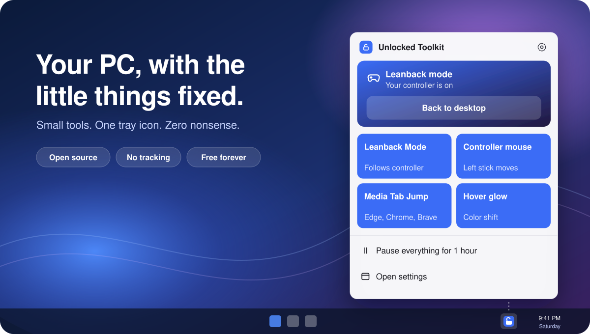

Windows Unlocked is a growing set of tiny, friendly tools that smooth out the everyday annoyances. Pick the ones you like, skip the rest, and remove any of them in a click.
One small file · {{TOOL_COUNT}} tools and counting · no account, no ads, no tracking

Each one does a single job, does it well, and gets out of your way. No bloat, no subscriptions, no "upgrade to Pro".
The tools never go online and never read what you type. Everything stays on your PC.
No hidden programs. Each tool is plain source code, built on your PC by the compiler that ships with Windows.
Every tool comes with its own uninstaller that puts things back the way they were.
They sit quietly in the background, start with Windows, and don't need admin rights unless they say so.
Install all of them, or just the one you came for.
More tools are being polished and will show up here, and in the same installer, when they're ready.
One file holds every tool. Run it, tick what you want, done.
WindowsUnlockedToolkit.cmd is one small file with every tool inside.
If Windows says it's from an unknown publisher, choose More info, then Run anyway.
Choose from the menu. Run the file again any time and press U to uninstall one.
Paste this into PowerShell for the same menu:
irm {{SITE_URL}}/install.ps1 | iexEvery line is on GitHub. Each tool also installs on its own from its folder.
Browse the codeThe installer contains each tool's full source. The only download is AntiMicroX, through Windows' own winget, if you pick Leanback Mode and don't have it yet. Some tools are built on your PC with the C# compiler that comes with Windows, so antivirus or Smart App Control may ask about them the first time.
Everything is open source, so you (or a techy friend) can read exactly what each tool does. Nothing is pre-compiled: the tools are built from that source on your own PC. They don't connect to the internet, and they only use standard Windows features, like the accessibility tools screen readers rely on.
Windows shows that warning for any file that isn't signed with a paid certificate. This is a free hobby project, so it isn't. Choose More info, then Run anyway, or read the source first if you'd rather.
Run the installer again and press U, or open the tool's folder and double-click Uninstall.cmd. Settings it changed (like display scaling) go back to how they were.
No. The tools are small background helpers that mostly sleep until you need them. You can see and pause them in Task Manager under Startup apps.
They're made on Windows 11. They only need Windows PowerShell 5.1 and the C# compiler that come with Windows, so Windows 10 should work too. If it doesn't, please open an issue.
Yes please! Open an issue on GitHub with your idea or what went wrong. Each tool keeps a small log in its folder that helps track problems down.
Other home-made corners of the internet worth a visit.